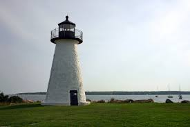

IP Address: 130.64.64.37
I grew up in Wayland Massachusettes.
This is a picture of the Mattapoisett Lighthouse. It's my favorite place because it is where I spend summers growing up and it holds a lot of memories for me. I love when I get to go spend time with my family there!
Something no one would expect about me: I love to cook and bake!